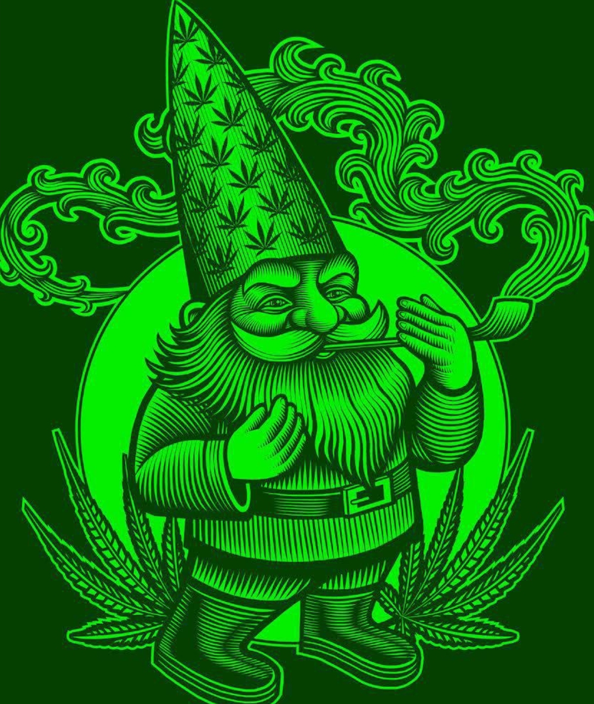
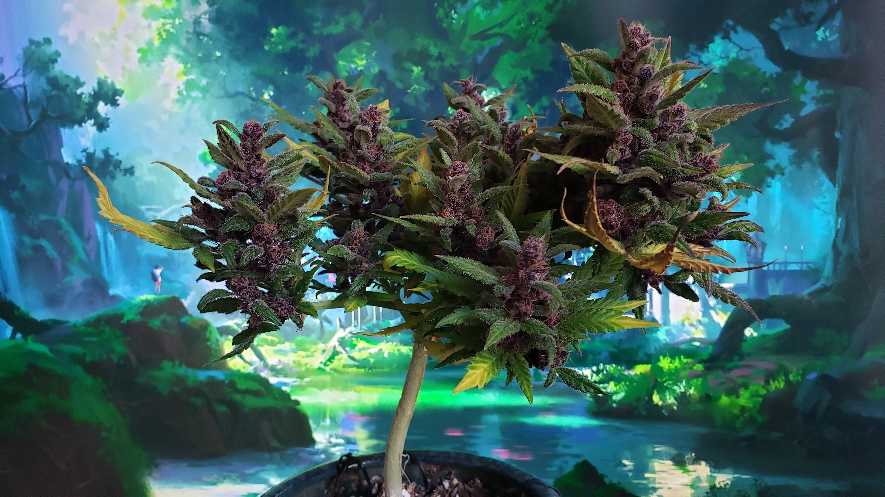
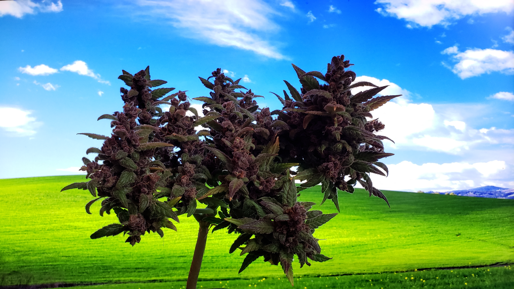

WeedWeed.Wiki
The plant encyclopedia for everyone
Welcome to weedweed.wiki, a free wiki-style knowledge base for the people, by the people.

This site is meant to be a more user friendly approach to growing plants. Wikipedia is a fantastic source for, well, everything, but it often progresses in a more complex manner.
This wiki will cover everything from general information about plants, to tips and fundamentals of gardening and growing, to dealing with pests and feeding.
Getting Started
New here? Start with these essentials:
- About this wiki — what we’re all about and learn how to contribute
- Get Started Growing — where to start
- Frequently Asked Questions — common answers to common questions
Popular Pages
Frequently visited articles:
In the News


Recent Articles
-
Get Started Growing
A beginner's guide to growing cannabis at home
-
Light
How light affects cannabis growth and how to choose the right lighting
-
Nutrients
The essential elements cannabis plants need to grow and flower
-
Mr. X
An essay by Carl Sagan written in 1969
-
Autoflower
Cannabis varieties that flower based on age rather than light cycle